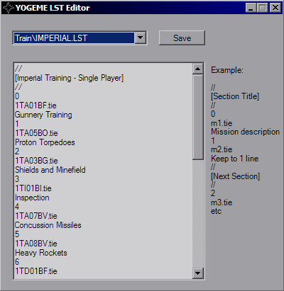

LST Editor

The LST Editor is used for XvT and XWA to make inserting your custom missions into the games easier. The right side gives you simple example text as an example for the layout of the file, simply insert your filename with a brief description and you'll have easy access to the mission.